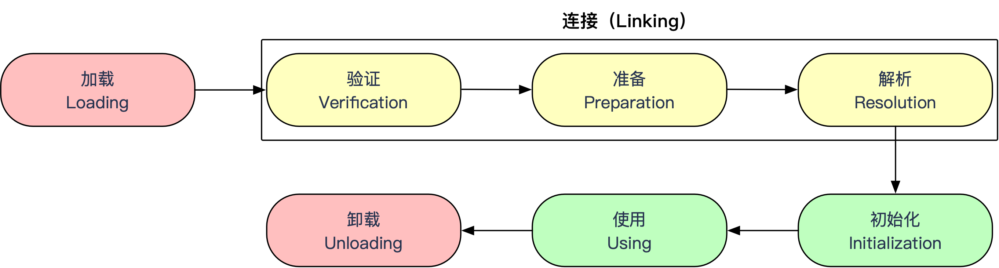
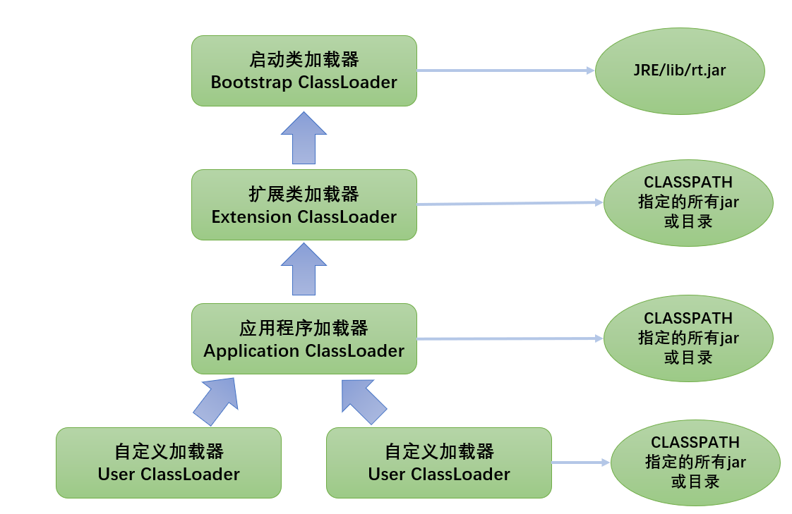

在搞清楚JVM运行时数据区里面的堆/栈/GC这些原理之前，得先搞清楚JVM是如何把class文件加载到内存中的，这是一切开始的原点。
本文就主要说明JVM如何把Bytecode加载到Method Area的全过程。
类的加载过程

加载 Loading
什么时候开始类的加载阶段，Java虚拟机规范中没有强制约束，交给虚拟机的具体实现去自由把握。
非数组类的加载
在加载阶段，JVM需要完成3件事情：
- 通过一个
类的全限定名来获取此类的二进制字节流； - 通过这个字节流所代表的
静态存储结构转化为方法区的运行时数据结构； - 在内存中生成一个代表这个类的
java.lang.Class对象，作为方法区这个类的各种数据的访问入口；
加载阶段可以采用BootstrapClassLoader，也可以采用自定义类加载器来控制字节流的获取方式，重写loadClass()方法；
数组类的加载
数组类的加载与普通类的加载情况有所不同：数组类本身不通过类加载器创建，而是通过JVM直接创建，但数组类的元素类型最终也要靠类加载器去创建。
数组类的创建遵循已下规则：
- 如果数组的类型是
引用类型，需要递归采用非数组类的加载过程去加载； - 如果数组的类型
不是引用类型（如int[]），JVM会将数组标记为与BootstrapClassLoader关联； - 数组类的
可见性与它的元素类型的可见性是一致的，如果元素类型不是引用类型，那数组类型的可见性将默认是public；???
加载阶段与连接阶段的部分内容（如字节码文件格式的验证）是交叉进行的；
加载尚未完成，连接阶段可能就已经开始了。
连接 Linking
校验 Verification
Class文件是JVM规范定义的，并不一定要求用Java源码编译而来，可以使用任何途径产生。
所以为了保护虚拟机自身安全，防止恶意代码的攻击，验证阶段需要拦截对自身有害的字节流避免导致系统崩溃；
- 如果校验不通过，会抛出异常：
java.lang.VerifyError， - 如果代码被反复验证过了，可以提供
-Xverify:none来关闭校验以缩短类加载的时间；
验证阶段包含4个校验动作（文件格式、元数据、字节码、符号引用校验），
文件格式校验
验证字节流是否符合 Class 文件格式的规范，并且能被当前版本的虚拟机处理。
验证内容：
- 是否以魔数 0xCAFEBABE 开头。
- 主、次版本号是否在当前虚拟机处理范围之内。
- 常量池的常量中是否有不被支持的常量类型。
该阶段的验证是基于字节流进行的，只有验证通过了，字节流才会进入内存的方法区中进行存储。
所以后面 3 个验证阶段都是基于方法区的存储结构进行的。
元数据校验
对字节码描述的信息进行语义分析，以保证其描述的信息符合 Java 语言规范的要求。
验证内容：
这个类是否有父类（除 java.lang.Object 外，所有类都应当有父类）。
这个类的父类是否继承了不允许被继承的类（被 final 修饰的类）。
如果这个类不是抽象类，是否实现了其父类或接口中要求实现的所有方法。
类中的字段、方法是否与父类发生矛盾；
主要目的是对类的元数据信息进行语义校验，保证不存在不符合 Java 语言规范的元数据信息。
字节码验证
对类的方法体进行检验分析，保证类的方法在运行时不会做出危害虚拟机安全的事件。
验证内容：
- 保证任意时刻
操作数栈的数据类型与指令代码序列都能配合工作。 - 保证跳转指令不会跳转到方法体以外的字节码指令上。
保证方法体中的类型转换是有效的。
主要目的是通过数据流和控制流分析，确定程序语义是合法的、符合逻辑的。
符号引用验证
对类自身以外（常量池中的各种符合引用）的信息进行匹配性校验。
这一阶段发生在虚拟机将符号引用转化为直接引用时（解析阶段发生）。
验证内容：
- 类名称：符号引用中通过字符串描述的
全限定名是否能找到对应的类。 - 方法和字段：在指定类中是否存在符合方法的字段描述符，以及简单名称所描述的
方法和字段。 - 访问权限：符号引用中的类、字段、方法的访问性是否可被当前类访问。
主要目的是确保解析动作能正常执行。
准备 Preparation
准备阶段是正式为类变量分配内存并设置变量初始值的阶段。
注意点：
- 进行内存分配的仅包括
类变量，而不包括实例变量（实例变量为null）。 - 初始值通常是数据类型的零值。
- 会指定常量的值（final）；
解析 Resolution
解析阶段是虚拟机将常量池内的符号引用替换为直接引用的过程。
- 符号引用：以一组符号来描述所引用的目标，符号可以是任何形式的字面量，只要使用时能无歧义地定位到目标即可。
- 直接引用：可以是直接指向目标的指针、相对偏移量或是一个能间接定位到目标的句柄。
解析动作主要针对以下7 类符号引用（常量类型）进行
类或接口（CONSTANT_Class_info）字段（CONSTANT_Fieldref_info）类方法（CONSTANT_Methodref_info）接口方法（CONSTANT_InterfaceMethodref_info）方法类型（CONSTANT_MethodType_info）方法句柄（CONSTANT_MethodHandle_info ）调用点限定符（CONSTANT_InvokeDynamic_info ）
初始化 Initialization
在准备阶段，变量赋默认值，在初始化阶段根据程序员的主观计划去初始化类变量和其他资源的阶段。
到了初始化阶段，才真正开始执行类中定义的 Java 程序代码（或者说字节码），或者从另一个角度表达，初始化阶段是执行类构造器 cinit() 方法的过程。
类构造器 cinit() 方法的过程
cinit() 方法执行过程中的可能会影响程序运行行为的特点和细节：
- cinit() 方法是有编译器自动收集类中的所有
类变量的赋值动作和静态语句块中的语句合并产生的； 父类的cinit() 方法一定是优先于子类执行的；- cinit() 方法也不是必须的，如果一个类或者接口中没有静态变量语句块，也没有对静态变量的赋值操作，那么编译器可以不为这个类生成cinit() 方法；
- 虚拟机保证一个类的cinit() 方法在
多线程中被正确的加锁，同步。如果多线程去初始化这个类，其它线程都需要阻塞等待，直到活动线程cinit() 方法完毕；
对于初始化阶段，虚拟机规范严格规定了有且只有5种情况（主动引用），如果没有进行过初始化，需要触发类的初始化；
5种主动引用触发初始化
- 遇到以下4条字节码指令时：
- new（实例化对象）；
- getstatic（读取类的静态字段）；
- putstatic（设置类的静态字段）；
- invokestatic（调用类的静态方法）；
- 使用
java.lang.reflect进行反射调用时； - 当初始化一个类时，如果发现父类没有初始化，需先初始化父类；
- JVM启动时，需指定一个执行的主类（包含main方法的那个类），JVM会先初始化这个主类；
- JDK1.7动态语言支持时，如果一个
java.lang.invke.MethodHandle实例最后的解析结果REF_getstatic、REF_putstatic、REF_invokestatic的方法句柄；???
除此之外，所有引用类的方式都不会触发初始化
被动引用不会触发初始化
- 通过子类引用父类的静态字段，不会触发子类的初始化；
- 通过数组定义的引用类，不会触发此类的初始化；
- 引用类的常量不会触发初始化，因为在编译阶段常量会存入调用类的常量池中（常量传播优化），本质上没有直接引用到定义常量的类；
- 接口的初始化时，不会要求其父类全部都完成初始化，只有在真正使用到父接口时（如引用接口定义的常量）才会初始化；
使用 Using
卸载 Unloading
类加载器
什么是类加载器？
虚拟机设计团队把类加载阶段中的通过一个类的全限定名来获取描述此类的二进制字节流这个动作放到 Java 虚拟机外部去实现，以便让应用程序自己决定如何去获取所需要的类。实现这个动作的代码模块称为类加载器。
类与类加载器
对于任意一个类，都需要由加载它的类加载器和这个类本身一同确立其在 Java 虚拟机的唯一性，每个类加载器都拥有一个独立的类名称空间。
也就是说：比较两个类是否相等(equals,isInstance)，只要在这两个类是由同一个类加载器加载的前提下才有意义，否则，即使这两个类来源于同一个 Class 文件，被同一个虚拟机加载，只要加载它们的类加载器不同，那这两个类就必定不相等。
从 Java 虚拟机的角度来讲，只存在两种不同的类加载器：
- 启动类加载器（Bootstrap ClassLoader），这个类加载器使用
C++ 实现，是虚拟机自身的一部分； - 所有其他的类加载器，这些类加载器都由
Java实现，独立于虚拟机外部，并且全都继承自抽象类java.lang.ClassLoader。
从 Java 开发者的角度来看，类加载器可以划分为：
- 启动类加载器（Bootstrap ClassLoader）：这个类加载器负责将存放在
\lib 目录中的类库加载到虚拟机内存中。启动类加载器无法被 Java 程序直接引用，用户在编写自定义类加载器时，如果需要把加载请求委派给启动类加载器，那直接使用 null 代替即可； - 扩展类加载器（Extension ClassLoader）：这个类加载器由
sun.misc.Launcher$ExtClassLoader实现，它负责加载\lib\ext目录中，或者被java.ext.dirs系统变量所指定的路径中的所有类库，开发者可以直接使用扩展类加载器； - 应用程序类加载器（Application ClassLoader）：这个类加载器由
sun.misc.Launcher$App-ClassLoader实现。getSystemClassLoader()方法返回的就是这个类加载器，因此也被称为系统类加载器。它负责加载用户类路径（ClassPath）上所指定的类库。开发者可以直接使用这个类加载器，如果应用程序中没有自定义过自己的类加载器，一般情况下这个就是程序中默认的类加载器。
我们的应用程序都是由这 3 种类加载器互相配合进行加载的，在必要时还可以自己定义类加载器。
双亲委派模型

类加载器所呈现出的这种层次关系，称为类加载器的双亲委派模型（Parents Delegation Model）。
双亲委派模型要求除了顶层的启动类加载器以外，其余的类加载器都应当有自己的父类加载器。
双亲委派模型的工作过程
如果一个类加载器收到了类加载的请求，它首先不会自己去尝试加载这个类，而是把这个请求委派给父类加载器去完成，每一个层次的类加载器都是如此，因此所有的加载请求最终都应该传送到顶层的启动类加载器中，
只有当父类加载器反馈自己无法完成这个类加载请求（它的搜索范围中没有找到所需的类）时，子加载器才会尝试自己去加载。
这样做的好处就是 Java 类随着它的类加载器一起具备了一种带有优先级的层次关系。
双亲委派模型的功能
双亲委派模型对于保证 Java 程序运行的·稳定性·很重要。
例如java.lang.Object它放在 rt.jar 中，无论哪一个类加载器要加载这个类，最终都是委派给处于模型顶端的启动类加载器来加载，因此 Object 类在程序的各种类加载器环境中都是同一个类。
相反，如果没有使用双亲委派模型，由各个类加载器自行去加载的话，如果用户自己编写了一个称为 java.lang.Object的类，并放在程序的ClassPath中，那系统中将会出现多个不同的 Object 类，java 类型体系中最基本的行为就无法保证了。
双亲委派模型的实现
实现双亲委派模型的代码都集中在java.lang.ClassLoader的loadClass()方法中：
- 子类先委托父类加载；
- 父类加载器有自己的加载范围，范围内没有找到，则不加载，并返回给子类；
- 子类在收到父类无法加载的时候，才会自己去加载；
1
2
3
4
5
6
7
8
9
10
11
12
13
14
15
16
17
18
19
20
21
22
23
24
25protected Class<?> loadClass(String name, boolean resolve)
throws ClassNotFoundException {
// 首先，检查请求的类是不是已经被加载过
Class<?> c = findLoadedClass(name);
if (c == null) {
try {
if (parent != null) {
c = parent.loadClass(name, false);
} else {
c = findBootstrapClassOrNull(name);
}
} catch (ClassNotFoundException e) {
// 如果父类抛出 ClassNotFoundException 说明父类加载器无法完成加载
}
if (c == null) {
// 如果父类加载器无法加载，则调用自己的 findClass 方法来进行类加载
c = findClass(name);
}
}
if (resolve) {
resolveClass(c);
}
return c;
}
破坏双亲委派模型
为什么需要破坏双亲委派模型？
因为在某些情况下父类加载器需要委托子类加载器去加载class文件，但受到加载范围的限制，父类加载器无法加载到需要的文件，比如JDBC加载外部数据库驱动就是破坏了双亲委派的典型示例。
以java.sql.Driver接口为例，由于Driver接口定义在JDK当中的，而其实现由各个数据库的服务商来提供，比如MySQL的就写了MySQL Connector，那么问题就来了，java.sql.DriverManager（也由JDK提供）要加载各个实现了Driver接口的实现类，然后进行管理，但是DriverManager由BootstrapClassLoader加载，但只能加载JAVA_HOME的lib下文件，而其实现是由服务商提供的，由ApplicationClassLoader加载，这个时候就需要BootstrapClassLoader来委托子类来加载Driver实现。
在sun.misc.Launcher中，Launcher初始化的时候，会获取ApplicationClassLoader，然后将其设置为上下文类加载器（Thread.currentThread().setContextClassLoader(this.loader)），所以线程上下文类加载器默认情况下就是系统加载器。
破坏双亲委派模型的应用：JDBC、JNDI、JAXB、JCE、JBI；
其他程序动态性的追求：代码热替换、模块热部署；